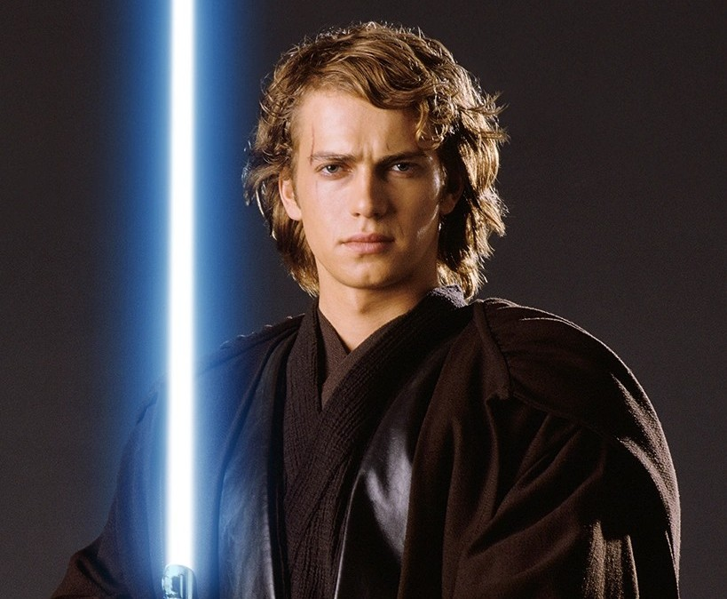
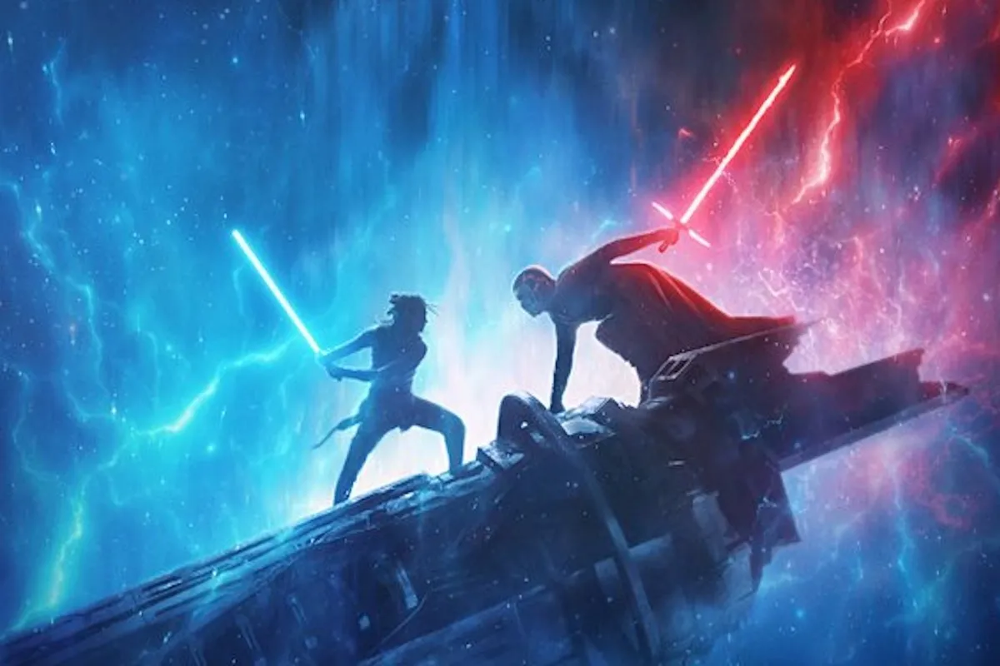
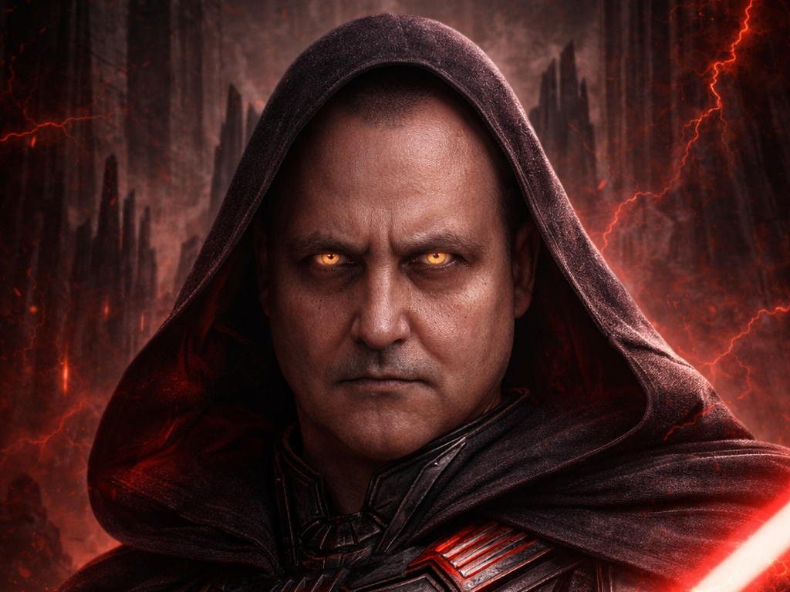

Какво ще откриеш в този сайт?

Видове лазерни мечове
Разгледай най-известните цветове и разновидности на светлинните мечове и научи какво символизират.

Известни герои
Научи кой герой какъв меч носи и как изборът на оръжие разкрива неговия характер и път.

Сила и символика
Всеки светлинен меч е свързан със Силата, с моралния избор и с личността на своя притежател.

Val Tod
Открий историята на най-могъщия сит в Империята, неговия уникален меч и тайния елит 12Б, който му служи вярно.